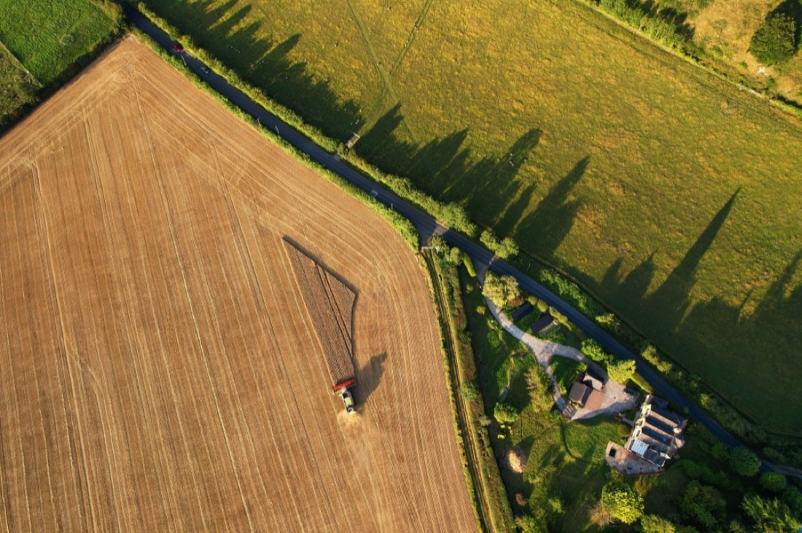

Kokusai Business
Kokusai BusinessAdvisory
Experience
Experience grounded in practice
KBA’s business includes introducing opportunities to clients the team has identified, helping clients form partnerships and joint ventures, assisting clients to rebuild relationships and making decisions where KBA believes it is in the client’s interest not to proceed.
Case studies
-
 Market entryFinancial services
Market entryFinancial services
Establishing a joint venture in Japan
KBA identified an opportunity in Japan for an Australian financial institution and helped turn it into a new joint venture with the right Japanese partner.
-
Cross-cultural alignmentEstablished operations
Restoring dialogue with a Japanese equity partner
When communication broke down between an Australian organisation and its Japanese equity partner, KBA brought senior management back into direct dialogue and advised on their differing expectations.
-
Post-acquisition integration
Integrating an Australian business into a Japanese group
After a Japanese group acquired an Australian business, KBA helped both management teams align on reporting, decision-making and expectations through the first year of integration.
-
Governance
Aligning a Japanese parent and its Australian board
KBA advised the Australian board of a Japanese-owned company on working with its parent, clarifying governance expectations and improving communication between the two.
-
Acquisitions & investments
Assessing an Australian investment for a Japanese investor
KBA assessed the strategic fit, leadership and long-term prospects of an Australian business for a Japanese investor considering a significant stake.
-

Relationships & accessOpening institutional relationships for a new entrant
KBA introduced a new entrant to the Australian market to the government, industry and institutional contacts it needed to establish its business.
Talk to KBA before you commit.
Speak with KBA’s Principals to discuss your strategic objectives.
Speak with KBA